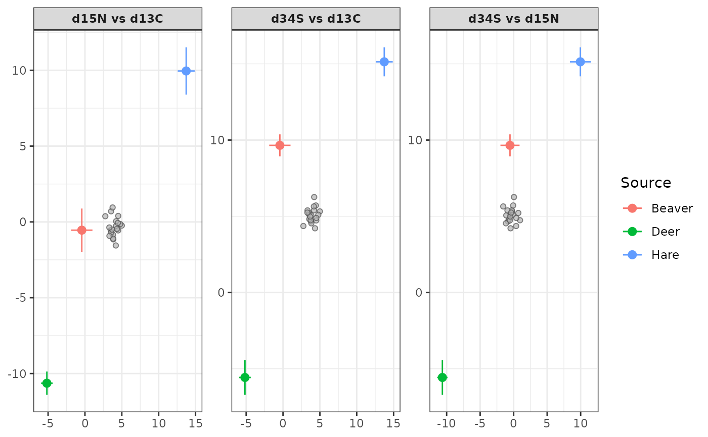
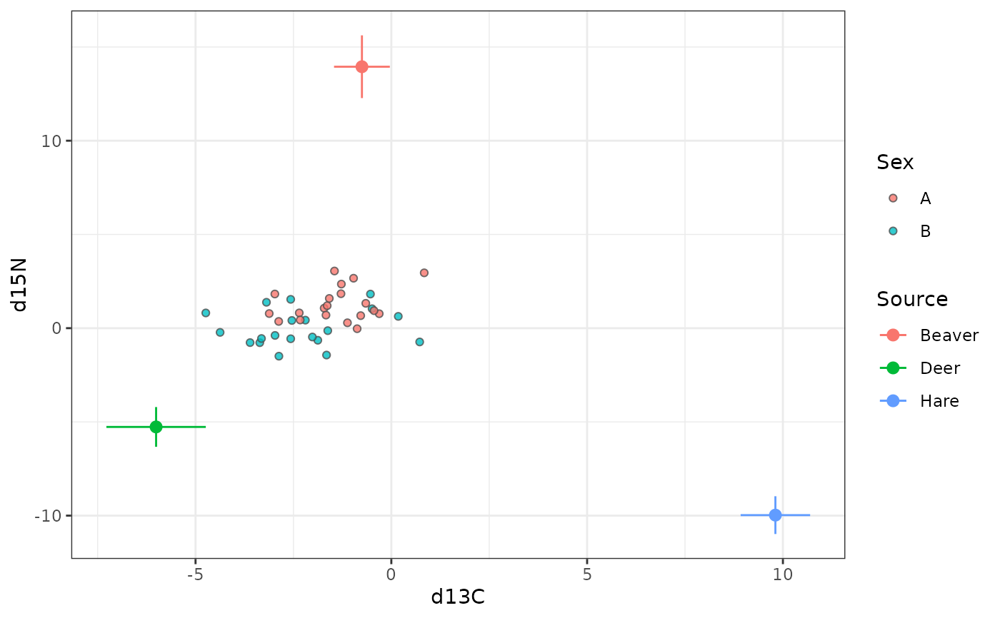
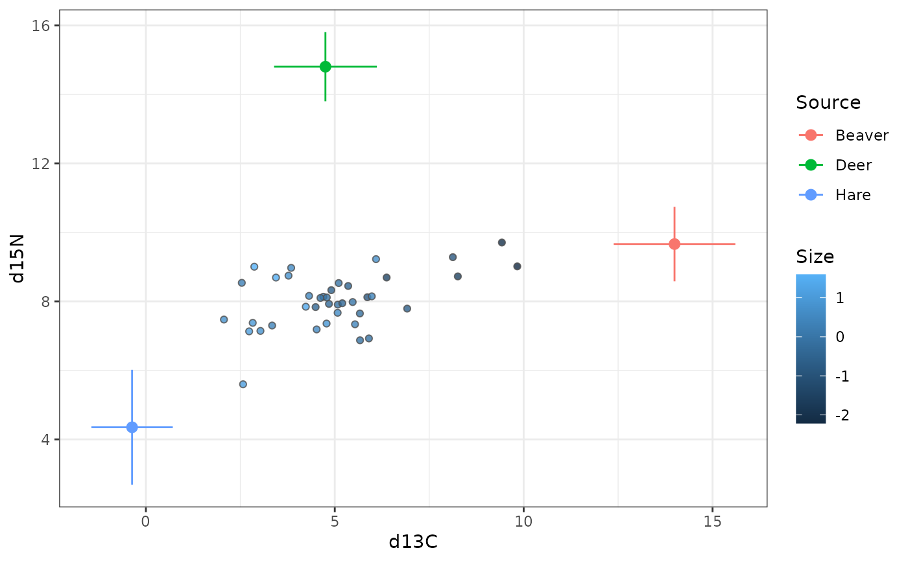
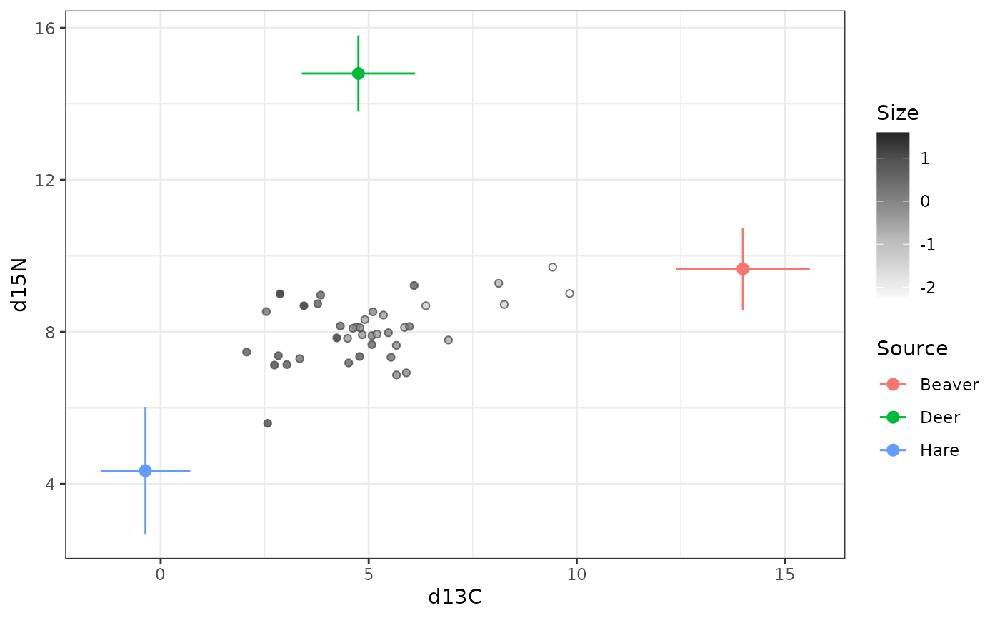

Plots the raw mixture data against each source's mean +/- 1 SD in isotope
(tracer) space, to check that the mixtures fall within the region spanned
by the sources before fitting a model. With exactly two isotopes (or a
single isotopes pair) the result is one biplot; with three or more, one
panel per pair of isotopes, so all pairwise mixing regions can be checked in
a single figure.
Usage
plot_isospace(
mixture_data,
source_data,
tdf_data,
isotope_names,
source_means_sds = FALSE,
tdf_means_sds = TRUE,
source_col = "Source",
isotopes = NULL,
color_by = NULL
)Arguments
- mixture_data
Data frame of mixture observations (e.g. consumers, in a diet-mixing study): one row per individual (or per sample), with a column for each entry of
isotope_names, plus any covariate/grouping columns used informula.- source_data
Source isotope data. If
source_means_sds = FALSE(default), long format with one row per raw sample and columnsSource,isotope_names. Ifsource_means_sds = TRUE, one row per source with columnsSource,<isotope>_mean,<isotope>_sdfor every isotope.- tdf_data
Trophic discrimination factor (diet-tissue discrimination) data, same layout convention as
source_data, controlled bytdf_means_sds(defaultTRUE, since TDFs are usually taken from the literature as means/SDs).- isotope_names
Character vector of isotope column names shared by
mixture_data,source_dataandtdf_data, e.g.c("d13C", "d15N").- source_means_sds
Logical; is
source_datasupplied as means/SDs (TRUE) or raw replicate samples (FALSE, default)? Raw data are summarised by the sample mean and SD of the replicates per source.- tdf_means_sds
Logical; is
tdf_datasupplied as means/SDs (TRUE, default) or raw replicate samples (FALSE)? Raw data are summarised by the sample mean and SD of the replicates per source.- source_col
Name of the source-identifier column shared by
source_dataandtdf_data. Default"Source".- isotopes
Optional character vector of two isotope names (from
isotope_names), the first for the x axis and the second for the y axis, to plot a single pair.NULL(default) plots every pair.- color_by
Optional name of a
mixture_datacolumn (factor or numeric) to colour the mixture points by.
Details
Sources are plotted at their mean plus the trophic discrimination factor (TDF) mean, since that is the actual mixing region, with the source and TDF SDs combined as \(\sqrt{\sigma_{source}^2 + \sigma_{TDF}^2}\). Mixtures are plotted as points at their observed values. Mixtures lying well outside the sources suggest a missing source or an incorrect TDF (Phillips et al. 2014).
References
Phillips, D.L., Inger, R., Bearhop, S., Jackson, A.L., Moore, J.W., Parnell, A.C., Semmens, B.X., & Ward, E.J. (2014). Best practices for use of stable isotope mixing models in food-web studies. Canadian Journal of Zoology, 92(10), 823-835. doi:10.1139/cjz-2014-0127
Examples
sim <- simulate_bsimms_data(
~1,
n_mixture_obs = 20,
source_names = c("Beaver", "Deer", "Hare"),
isotope_names = c("d13C", "d15N", "d34S"),
seed = 1
)
plot_isospace(
sim$mixture_data,
sim$source_data,
sim$tdf_data,
isotope_names = sim$isotope_names,
source_means_sds = sim$source_means_sds,
tdf_means_sds = sim$tdf_means_sds
)

# Colour the mixtures by a factor covariate
sim_f <- simulate_bsimms_data(
~Sex,
n_mixture_obs = 40,
n_levels = list(Sex = 2),
source_names = c("Beaver", "Deer", "Hare"),
isotope_names = c("d13C", "d15N"),
seed = 1
)
p_f <- plot_isospace(
sim_f$mixture_data,
sim_f$source_data,
sim_f$tdf_data,
isotope_names = sim_f$isotope_names,
source_means_sds = sim_f$source_means_sds,
tdf_means_sds = sim_f$tdf_means_sds,
color_by = "Sex"
)
p_f

# ... or by a continuous covariate
sim_c <- simulate_bsimms_data(
~Size,
n_mixture_obs = 40,
source_names = c("Beaver", "Deer", "Hare"),
isotope_names = c("d13C", "d15N"),
seed = 1
)
p_c <- plot_isospace(
sim_c$mixture_data,
sim_c$source_data,
sim_c$tdf_data,
isotope_names = sim_c$isotope_names,
source_means_sds = sim_c$source_means_sds,
tdf_means_sds = sim_c$tdf_means_sds,
color_by = "Size"
)
p_c

# The mixtures are coloured with the fill aesthetic, so change their
# colours with a fill scale (the sources keep their own colour scale)
p_c + ggplot2::scale_fill_distiller(palette = "Greys", direction = 1)
